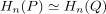
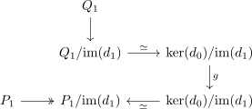
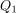
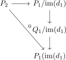
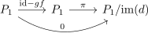
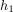
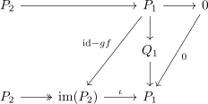
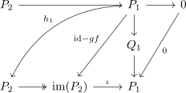
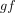
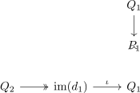

quasi isomorphism between chain complexes of projectives and homotopy equivalence
1. Proposition
Let  be an abelian category and
be an abelian category and  be the category of chain complexes.
Suppose
be the category of chain complexes.
Suppose
are non negatively graded chain complex of projectives with a chain map
Then  is part of a chain homotopy equivalence
is part of a chain homotopy equivalence
2. Proof
2.1. a)
By assumption, there exists an inverse  on the homology
on the homology

Consider
Then since

is projective, there exists a morphismThen it holds, that

is the zero morphism
hence by extension of a chain map we get chain maps
Furthermore, define
as evident zero morphism and since

also ??? at least rmod ? ??? a map


Thus by projectivity, we get an

and hence
thus by extension of a chain homotopy it follows, that

is a chain homotopy equivalence.2.2. b)
again we get a morphism
and again using analogously

3. meta
- for modules mostly happy
- in general for abelian categories correct ??